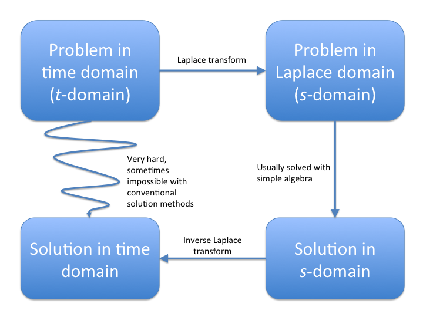

Takeaways
-
Laplace transforms turn a differential equation into an algebraic equation
-
The Laplace transform of a function is defined as:
\[ F(s) = \mathcal{L}(f(t)) = \int_0^\infty f(t) e^{-st} dt \]
-
The Laplace transform is invertible, meaning that \(\mathcal{L}(f(t)) = F(s)\) implies \(\mathcal{L}^{-1}(F(s)) = f(t)\). This is how we invert the Laplace transform, since the inverse Laplace transform formula is very difficult to work with and not well-defined in many cases.
-
When solving ODEs, we always look up the Laplace transform of a function from a transform table. We also rely on tables to find inverse transforms.
-
To solve a linear ODE using Laplace transform, we take the transform of both sides according to our Laplace transform theorems, algebraically rearrange to solve for \(F(s)\), and take the inverse transform to find \(f(t)\)
Overview
Applying Laplace transforms to differential equations is motivated by two primary reasons:
- Not all inputs or forcing functions to a dynamic system (which we model with ODEs) can be represented by functions that work with the solution methods we’ve studied so far.
- Solving a problem in the time domain is sometimes very hard, but if we transform the problem to be with respect to a different variable, the problem becomes much easier.
Laplace transforms are often applied in controls and robotics, in particular because they are so good at handling (1). To use a controls example, consider guiding a spacecraft to stay in orbit. We can expect most inputs to the system to be things like collisions with small pieces of space debris, which would be a single hit to the spacecraft and then nothing else (we refer to this hit as an impulse). How could we model this? We know from the mass-spring section that we start modeling with Newton’s second law \(F= ma\), but how do we model these hits from the debris?
Here’s a more tangible example: suppose I have an RLC circuit that is at steady state. How could I model suddenly applying an AC voltage source somewhere in the circuit? Well, we know that we have to start with Kirchoff’s voltage law to derive the equation, and the AC source will be some sort of sinusoid, but how do we model it turning on at a certain time point?
To solve these problems, we need to introduce a new class of non-smooth (i.e. non-differentiable) and discontinuous functions to model these kinds of inputs, and then develop the mathematical toolbox to work with them. Laplace transforms are the main tool we use for doing this.
The basic workflow for solving problems with Laplace transforms is:

Oftentimes, we’ll be presented with a problem where solving it in the time domain is incredibly difficult or even impossible. Laplace transforms allow us to translate the problem into an equivalent problem in the Laplace domain that is much easier to solve, solve the equivalent problem there, then convert our solution back to the time domain i.e. the solution to the original problem.
Below, we outline the basics of Laplace transforms, how to compute forward and inverse transforms, and how these apply to differential equations. While I’ve tried to include any relevant or helpful theory, the fact is that the theory of Laplace transforms (i.e. where they come from, what the “\(s\)-domain” really is) is very involved, and unfortunately we have to skip a lot of it to avoid this section of notes being many, many times longer.
Laplace Transform Definition
The basic definition of the Laplace transform is given by the formula:
\[\begin{gather} F(s) = \mathcal{L}(f(t)) = \int_0^\infty f(t) e^{-st} dt \end{gather}\]We denote the Laplace transform operator as \(\mathcal{L}\{\cdot\}\). This operator just means that when we apply it to a function, it plugs the function into the above integral and computes the output. The Laplace transform is a map from the \(t\) to the \(s\) domain, and is known as an integral transform because it performs this mapping by taking an integral.
What is this \(s\)? Well, the unhelpful (but correct) answer is that \(s\) doesn’t really have any meaning here other than being a placeholder. When you use Laplace transforms for more advanced applications such as in control theory and signal processing, \(s\) takes on some physical meaning, but in other applications e.g. statistics, it is just a placeholder. The big idea is that we rephrase the problem in terms of \(s\), solve it in terms of \(s\), then convert things back to being in terms of \(t\).
Where does it come from? Well, there’s also no real good explanation for that. The general consensus amongst mathematical historians is that the Laplace transform was simply written down by Pierre-Simon Laplace one day because he realized that using it allowed him to easily compute many things in probability. There are some justifications out there, but in reality none of them are rigorous: the Laplace transform just works, and that’s why we use it.
Now that we’re done with the (sufficiently unhelpful) preliminaries, we can get down to actually computing and working with Laplace transforms.
Forward Transforms
We’ll first deal with forward transforms. We refer to taking the Laplace transform of something as taking the forward transform, since we are going into the Laplace domain. You take the forward transform of a function \(f(t)\) simply by computing the integral above:
\[F(s) = \int_0^\infty f(t) e^{-st} dt\]Beyond the formula, what’s important to note is that the Laplace transform of a function is only defined for \(t > 0\) and \(s >0\). This is a very important detail to keep in mind: when working with Laplace transforms: time has a definite starting point.
For computing the transform, let’s work through a quick example. Consider \(f(t) = 2t\):
\[\begin{align} F(s) &= \int_0^\infty 2t e^{-st} dt \\ &= \left. - \frac{1}{s} 2t e^{-st} \right|_0^\infty - 2\frac{-1}{s}\int_0^\infty e^{-st}dt \\ &= 2\frac{1}{s}\int_0^\infty e^{-st}dt \\ &= -2 \frac{1}{s^2} \left. e^{-st} \right|_0^\infty \\ &= \frac{2}{s^2} \end{align}\]The actual transform is pretty straightforward to compute, but requires a fair amount of integration by parts. For this reason, we use a Laplace transform table to do the bulk of the heavy lifting. A transform table (given in your course reader or easily found online) just contains a list of common functions and their Laplace transforms. Nearly all functions you’ll work with will have a Laplace transform that is on the table or is easy to derive using the table and some of the theorems discussed below.
Inverse Transforms
Inverse transforms are much trickier to compute—indeed, they are not really possible to compute by hand. While there exists a formula for inverse Laplace transforms, we do not use it because it is big and ugly and altogether unhelpful as anything besides a theoretical tool.
Instead of trying to compute the inverse transform by hand, we rely on the invertibility property of the Laplace transform. The invertibility property says that if \(F(s)\) is the forward transform of \(f(t)\), then \(f(t)\) is the inverse transform of \(F(s)\). Basically, the inverse Laplace transform operator \(\mathcal{L}^{-1}\{\cdot\}\) just reverses the forward Laplace transform operator.
To see an example, consider:
\[\begin{gather} F(s) = \frac{1}{s^2 + 9} \end{gather}\]From the table, this looks a lot like the transform of a sine function, although we need to rearrange it a bit:
\[\begin{gather} F(s) = \frac{1}{3} \frac{3}{s^2 + 9} \end{gather}\]Much better. Now it looks exactly like the Laplace transform of a sine, and we can simply take the inverse Laplace transform by matching to what’s on the table:
\[\begin{gather} \mathcal{L}\left\{ \frac{1}{3} \frac{3}{s^2 + 9} \right\} = \frac{1}{3} \sin(3t) \end{gather}\]While simple, this example illustrates the very basic parts of the workflow for deriving Laplace transforms. Specifically, we take the \(F(s)\), rearrange it a bit to look like one of the \(F(s)\) on the table, then take the inverse transform by simply writing down what the original function must have been based on the table.
Finding inverse Laplace transforms with a table is quite tricky, so be sure to practice this thoroughly. You do not want to end up in a situation, especially on an exam, where you’ve solved the problem correctly but then cannot take the inverse transform.
Derivative Theorems
Now we arrive at the first important theorems in Laplace transforms: the derivative theorems. The derivative theorems are really more just identities that arise from the Laplace transform formula, but they are exceedingly useful.
The first relates the derivatives of a function \(f(t)\) to its Laplace transform:
\[\begin{gather} \mathcal{L}(f'(t)) = s F(s) - f(0) \\ \mathcal{L}(f''(t)) = s^2 F(s) - sf(0) - f'(0) \end{gather}\]A quick note here is that sometimes you’ll see the phrase “zero initial conditions”. This means that \(f(0) = f'(0) = 0\), so a derivative in the \(t\) domain just because multiplication by \(s\) in the \(s\) domain. You will not always have zero initial conditions, but when you do it is very nice and makes the math much cleaner.
Next we have the Laplace transform of an integral:
\[\begin{gather} \mathcal{L}\left[ \int_0^t f(\tau) d\tau \right] = \frac{F(s)}{s} \end{gather}\]This theorem can be a bit tricky to work with, but can sometimes make your life much easier. Consider the following function:
\[\begin{gather} F(s) = \frac{1}{s^3 + 4s} \end{gather}\]Instead of doing a partial fraction decomposition as we might be tempted to do, not that we can write this as:
\[\begin{gather} \frac{1}{s^3 + 4s} = \frac{1}{2s} \frac{2}{s^2 + 4} \end{gather}\]Now, let \(G(s) = 2 / (s^2 + 4)\) and \(g(t) = \sin(2t)\). Then, we can rewrite the above as:
\[\begin{gather} \frac{1}{2s} \frac{2}{s^2 + 4} = \frac{G(s)}{2s} = \frac{1}{2} \mathcal{L}\left\{\int_0^t g(\tau) d\tau \right\} = \mathcal{L}\{F(s)\} \end{gather}\]Taking the inverse transform:
\[\begin{gather} \mathcal{L}^{-1}\left\{ \frac{G(s)}{2s} \right\} = \frac{1}{2}\int_0^t \sin(2\tau) d\tau = f(t) \\ f(t) = \frac{1}{2} \left[ 1 - \cos(2t)\right] \end{gather}\]By using the integral identity above, we were able to avoid using partial fractions. Keep in mind that with Laplace transforms, there’s often more than one way to compute the transform or inverse transform; it is really just a matter of finding the fastest/easiest method.
Finally, we have the last derivative theorem (which is actually given as a transform pair in the course reader):
\[\begin{gather} \mathcal{L}\left\{t^n f(t)\right\} = (-1)^n F^{(n)}(s) \end{gather}\]This theorem is very useful for when you’re trying to invert a function in the \(s\) domain that doesn’t appear in the table, but one of its derivatives does. A typical example is \(F(s) = \ln(s + a)\):
\[\begin{gather} F(s) = \ln(s + a) \\ \frac{d}{ds} F(s) = \frac{1}{s + a} \\ -F'(s) = - \frac{1}{s + a} \\ \mathcal{L}^{-1}\{-F'(s)\} = tf(t) \\ tf(t) = \mathcal{L}^{-1}\left\{ - \frac{1}{s + a} \right\} = -e^{-at} \\ f(t) = -\frac{e^{-at}}{t} \end{gather}\]The most important thing to notice with all of these theorems is that differentiation in one domain is equivalent to multiplication in another domain. This is part of the true power of Laplace transforms: we are able to change a differential operation into a simple algebraic one, and algebraic operations are much, much easier to work with.
As far as solving for forward or inverse transforms, a good general rule is that if the function you’re trying to transform or invert does not appear anywhere on the table, then you probably need to apply one of these theorems. Facility with the derivative theorems is incredibly useful for finding the fastest method for computing forward and inverse Laplace transforms, and can make your life much easier when working with ODEs.
Next, we take a brief digression to discuss non-smooth functions and time shifting, but then we’ll loop back and combine all of these to show how these tools (and in particular the derivative theorems) allow you to efficiently solve ODEs.
Non-Smooth Functions
The biggest advantage of Laplace transforms when modeling dyanmic systems with ODEs is that Laplace transforms are very good at handling non-smooth or discontinuous functions. For our purposes here, there are two main discontinuous functions we’ll look at: delta functions and step functions. These are important because when combined with other, more conventional functions, we can create a very wide range of physically-realistic functions to use as inputs to a system of differential equations.
First up is the delta function (or Dirac delta as it is sometimes known, after the prolific 20th century mathematician and physicist Paul Dirac). The delta function is an instantaneous impulse of a unit of energy. The equation for a delta is:
\[\begin{gather} \delta(t - t_0) = \begin{cases} \infty & t = t_0 \\ 0 & \text{otherwise} \end{cases} \end{gather}\]A delta function has the property:
\[\int_{-\infty}^\infty \delta(t)dt = 1\]This integral is actually not well defined, and its derivation is quite difficult and a major sticking point for mathematicians. But alas, we are engineers and delta functions are quite useful, so we will persevere.
A delta function is an impulse in that it represents an input that inputs all of its energy into the system in a single instance e.g. a piece of rock striking a spacecraft or a robotic arm being struck by someone bumping into it. As you will see, even though it does not satisfy mathematicians, it is a very nice mathematical object to work with and makes our lives easier in many applications.
Next we have the Heavisie step function (named after Oliver Heaviside, a late 19th/early 20th century British mathematician). A step function is defined as:
\[\begin{gather} u(t - t_0) = \begin{cases} 1 & t > t_0 \\ 0 & \text{otherwise} \end{cases} \end{gather}\](where we don’t worry about what happens at \(t = t_0\)).
Heaviside step functions represent an “on switch”: if we multiply a function by a Heaviside step function \(u(t - t^*)\), it is like the function “turns on” at \(t^*\). You can imagine how this would be useful; in electrical circuits, for example, we might want to have a some sort of voltage source start at a certain point in time, so a step function makes this possible to represent mathematically.
Shift Theorems
The next two theorems we need to cover are what we’ll call the shift theorems. A shift is basically where the argument to a function is offset by some amount. (For example, in the previous section an impulse of the form \(\delta(t - a)\) is known as a shifted delta.)
With Laplace transforms, there are two types of shifts: \(t\)-shifts and \(s\)-shifts. Each of these have an associated transform pair. For \(t\)-shifts (when the function is offset by some amount in the \(t\)-domain), we have:
\[\begin{gather} \mathcal{L}\{u(t-a)f(t-a)\} = e^{-as} F(s) \end{gather}\]and for \(s\)-shifts:
\[\begin{gather} \mathcal{L}\left\{e^{at}f(t)\right\} = F(s - a) \end{gather}\]In both cases, multiplication by an exponential in one domain is equivalent to a shift in the other domain. (Both of these theorems directly follow from the definition of the Laplace transform, but we leave their derivation as an exercise.)
To see how these are applied in practice, let’s first compute a transform for a function with a \(t\)-shift:
\[\begin{align} f(t) &= u(t-a)\cos(t) \\ &= u(t-a)\cos(t-a + a) \\ &= u(t-a)\cos(t-a)\cos(a) - u(t-a)\sin(t-a)\sin(a) \\ \mathcal{L}\{f(t)\} &= \cos(a)e^{-as}\frac{s}{s^2 + 1} - \sin(a) e^{-as}\frac{1}{s^2 + 1} \end{align}\]Similarly for an \(s\)-shift:
\[\begin{align} F(s) &= \frac{2}{s^2 + 2s + 5} \\ &= \frac{2}{s^2 + 2s + 1 + 4} \\ &= \frac{2}{(s + 1)^2 + 4}\\ f(t) &= e^{-t} \sin(2t) \end{align}\]The shift theorems are reasonably easy to apply, but it is sometimes hard to spot the exact manipulation you need to make. A few things to always keep an eye out for:
- Completing the square
- Multiplying and dividing by the same quantity to make it appear in one part of the equation
- Trigonometric identities
In general though, this just takes a lot of practice, so be sure to devote plenty of extra study time to this topic.
Computing Laplace Transforms
As a quick summary, below is a list of steps to follow for computing Laplace transforms:
- Check if function is on the Laplace transform table. If it is not, then apply as necessary:
- Algebraic manipulations (e.g. trig identities)
- Partial fraction decompositions
- Derivative theorems
- Note any shifts that occur, or make any necessary manipulations so that the shift theorems apply
- Take the forward or inverse transform. When applying shifts, first apply the shift from the domain you’re coming from, then apply the shift for the domain you’re going to
In general, you just need to practice computing Laplace transforms. Plenty of examples are given in the worksheets and review keys, and many more are accessible online.
Solving ODEs with Laplace Transform
Here’s where the magic happens: we can put all of the above principles together to use Laplace transforms to solve ODEs. To see how this works, let’s work through an example of a LRC circuit with a voltage course that is only on for a short period of time. For the sake of argument, let \(L = C = 1\) and \(R=2\) in the equation, and we will keep things simple and use zero intiial conditions. For the input, let \(V(t)\) be an AC current \(\sin(2 \pi t)\) that is turned on at \(t = 1\) and off at \(t = 5\):
\[\begin{gather} i'' + 2i' + i = V'(t), \qquad i(0) = 0, \; i'(0) = 0 \end{gather}\]When you’re solving ODEs with Laplace transforms, you will almost always be dealing with some sort of piecewise or discontinuous inputs. (If you do not have these in the ODE, then there’s very little point of going to all the trouble to use Laplace transforms.) Consequently, it’s very important to figure out how to rewrite discontinuous or piecewise inputs.
Let’s write out \(V(t)\) as describe by the problem:
\[\begin{gather} V(t) = \begin{cases} 0 & t < 1 \\ \sin(2\pi t) & 1 < t \end{cases} \end{gather}\]We need to re-express this in a way that we can apply Laplace transforms, and the way we do this is using step functions. Step functions work as a(n):
- “on-switch” when we multiply by \(u(t-a)\)
- “off-switch” when we multiply by \(1 - u(t - a)\)
- “window function” when we multiply by \(u(t - a) - u(t-b)\) (with \(b > a\)). Basically it cuts off the function at \(t = a\) and \(t = b\)
We have an input that turns on at a certain point (\(t = 1\)) and stays on, so we want to use an on-switch. Therefore, we can re-express \(V(t)\) as:
\[\begin{gather} V(t) = u(t - 1) \sin(2\pi t) \end{gather}\]Finally, notice that \(V'(t)\) is what appears in the ODE, so we need to take the derivative of this. When you’re taking derivatives of a function that contains a step function, you can ignore the step function in the derivative. That is, we just treat the step function as a constant, then take the derivative of whatever it’s being multiplied by. Using this, we find:
\[\begin{gather} V'(t) = 2\pi u(t - 1) \cos(2\pi t) \end{gather}\]Now we can plug this into the ODE:
\[\begin{gather} i'' + 2i' + i = 2\pi u(t - 1) \cos(2\pi t) \end{gather}\]Notice that:
- We cannot solve this ODE using a method we’ve seen so far (e.g. undetermined coefficents)
- We can take the Laplace transform of both sides.
Laplace transform converts things like shifting and differentiation into multiplication and division, so when we have an ODE with discontinuous inputs, it’s logical to apply Laplace transform to it.
Before we take the Laplace transform of the right side though, we need to rearrange things a bit. Remember that with a \(t\) shift, \(t\) needs to be shifted by the same amount in every part of the term. We need to remedy this before taking a Laplace transform:
\[\begin{align} 2\pi u(t - 1) \cos(2\pi t) &= 2 \pi u(t-1) \cos(2\pi (t-1 +1)) \\ &= 2 \pi u(t-1) (\cos(2\pi (t-1))\cos(2\pi) - \sin(2\pi (t-1))\sin(2\pi)) \\ &= 2 \pi u(t-1)\cos(2\pi (t-1)) \end{align}\]Now we can take the Laplace transform of both sides:
\[\begin{gather} s^2I(s) + 2sI(s) + I(s) = 2 \pi e^{-s}\frac{s}{s^2 + 4 \pi^2} \end{gather}\]From here, we simply algebraically rearrange things and solve for \(I(s)\):
\[\begin{align} s^2I(s) + 2sI(s) + I(s) &= 2 \pi e^{-s}\frac{s}{s^2 + 4 \pi^2} \\ I(s)(s^2 + 2s + 1) &= 2 \pi e^{-s}\frac{s}{s^2 + 4 \pi^2} \\ I(s) &= 2\pi e^{-s} \frac{s}{(s^2 + 4\pi^2)(s^2 + 2s + 1)} \\ &= 2\pi e^{-s} \frac{s}{(s^2 + 4\pi^2)(s+1)^2} \\ &= 2\pi e^{-s} \left[ \frac{-4 \pi^2 s + s + 8 \pi^2}{(1 + 4 \pi^2)^2 (s^2 + 4 \pi^2)} + \frac{4 \pi^2 - 1}{(1 + 4 \pi^2)^2 (s + 1)} + \frac{1}{(-1 - 4 \pi^2) (s + 1)^2} \right] \end{align}\]From here, we need to take the inverse transform. After a lot of algebra, this becomes:
\[i(t) = \frac{2 \pi}{(1 + 4 \pi^2)^2} u(t-1) \left[e^{-(t-1)} ((4 \pi^2 +1)t - 8\pi^2) - 4 \pi \sin(2 \pi (t-1)) + (4 \pi^2 - 1) \cos(2 \pi (t-1))\right]\]This solution is a bit messy, but this example demonstrates the general workflow for solving ODEs using Laplace transform:
- Put both sides of the ODE into a form that we can take the Laplace transform of (change piecewise functions to “single line” functions)
- Take Laplace transform of both sides of the equation
- Algebraically solve for the Laplace transform of the function we want to find.
- If we are solving a system of ODEs with Laplace transform, we need to solve a system of linear equations to find the Laplace transforms of the functions of interest.
- Take the inverse transform(s) to find the solution(s) to the ODE
Laplace transforms reduce differential equations to algebraic equations, and for this reason they are extremely useful.
Closing Remarks
As you can see, Laplace transforms are incredibly useful for solving differential equations. Indeed, they are one of—if not the most—useful topics you learn in CME 102. They are really just the beginning though. There are all kinds of integral transforms out there, from Fourier transforms (which form the backbone of modern signal processing and imaging) to wavelet transforms (which is the basis of JPEG compression). There is an entire field of applied mathematics known as computational harmonic analysis dedicated to developing efficient methods and exploring applications of integral transforms like these. In fact, large parts of this field was developed at Stanford by David Donoho and Emanuel Candes, both professors in the statistics department.
We’ve given you just a taste of this field here, but I hope you will consider exploring these topics in the future. They are truly fascinating in their own right, and their applications have brought us everything from modern medicine to artificial intelligence to cellular communications. Laplace transforms are just the beginning of a field of mathematics that’s given birth to the modern data-driven world.